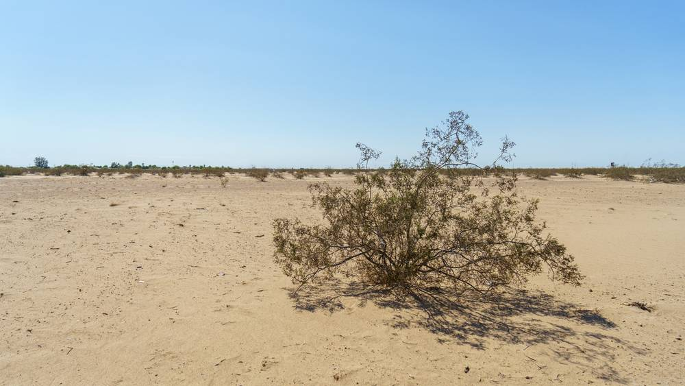

미국 캘리포니아 메사 그란데 부족, 첫 공공 태양광·배터리 완공…연 60MWh 발전, 전기요금 연 16,780달러 절감

비영리단체 SELF가 설계·기금 조성, 부족민 4명 고용…주택 최대 150채 계획의 첫 단계 12채는 2028년 봄까지
캘리포니아주 샌디에이고 카운티 시골의 메사 그란데 디에게뇨 미션 인디언 부족이 첫 공공 태양광·배터리 설비를 10월 중순 완공했다. 설비는 부족 정부와 주택 서비스, 문화 프로그램, 식량 배급, 비상 대응을 맡는 행정 건물 3곳에 달렸다. 사업을 이끈 비영리단체 솔라 일렉트릭 라이트 펀드(SELF)는 10월 20일 이 설비가 연 약 60MWh를 만들어 해마다 최소 16,780달러의 전기요금을 아끼고 정전 때 백업 전력을 낸다고 밝혔으며, 사업비는 공개하지 않았다. SELF는 설계와 기금 조성, 설치 조정을 맡았고 앞서 태양광 설치 교육을 받은 부족민 4명이 이 사업에 고용됐다. 부족은 2000년대 초 이후 새 주택을 짓지 못했는데, 주 정부 부족 홈키 1,243만2,000달러 등을 바탕으로 최대 150채 마스터플랜의 첫 단계인 12채를 2028년 봄까지 지어야 하고 주택 대기자는 약 50명이다. SELF의 밥 프렐링 상임이사는 "우리는 에너지를 다른 많은 개발 목표의 토대라고 생각하고 싶다"고 말했다.
시민에너지 관점
연 60MWh에 요금 절감 16,780달러라는 숫자는 크지 않지만, 정전 때 행정·식량 배급·비상 대응 건물이 계속 돌아간다는 점이 이 설비의 값어치다. 부족민 4명이 설치 일자리를 얻었다는 사실은 설비가 전기만이 아니라 지역의 기술과 소득을 남긴다는 뜻이다. 다만 사업비가 공개되지 않아 실제 투자 대비 효과는 아직 따져 볼 수 없다. 한국의 지자체도 주민센터와 복지시설 지붕에 태양광과 저장장치를 설치할 때 재난 대응 거점으로 쓰는 계획을 함께 짜고, 시공에 지역 인력을 쓰는 조건과 사업비를 공개하는 기준을 계약에 넣어야 한다.
출처: Tribal Business News 2026-11-07 Chez Oxendine 원문 보기
米カリフォルニア州メサ・グランデ部族、初の公共太陽光・蓄電池が完成…年60MWhを発電、電気料金を年1万6,780ドル削減
非営利団体SELFが設計・資金調達、部族民4人を雇用…最大150戸の住宅計画の第1段階12戸は2028年春まで
米カリフォルニア州サンディエゴ郡の農村部にあるメサ・グランデ・ディエゲーニョ・ミッション・インディアン部族(Mesa Grande Band of Diegueño Mission Indians)が、初の公共太陽光・蓄電池設備を10月中旬に完成させた。設備は、部族政府、住宅サービス、文化プログラム、食料配給、緊急対応を担う行政建物3棟に取り付けられた。事業を主導した非営利団体ソーラー・エレクトリック・ライト・ファンド(SELF)は10月20日、この設備が年約60MWhを発電して毎年少なくとも1万6,780ドルの電気料金を節約し、停電時にはバックアップ電力を供給すると発表したが、事業費は明らかにしていない。SELFは設計、資金調達、設置の調整を担い、事前に太陽光設置の訓練を受けた部族民4人がこの事業で雇用された。部族は2000年代初め以降、新しい住宅を建てられずにいたが、州政府の部族ホームキー1,243万2,000ドルなどを元に、最大150戸のマスタープランの第1段階となる12戸を2028年春までに建てなければならず、住宅の入居待ちは約50人だ。SELFのボブ・フレリング(Bob Freling)専務理事は「私たちはエネルギーを、ほかの多くの開発目標の土台だと考えたい」と語った。
市民エネルギーの視点
年60MWh、料金削減1万6,780ドルという数字は大きくないが、停電時にも行政・食料配給・緊急対応の建物が動き続けることが、この設備の価値だ。部族民4人が設置の仕事を得たという事実は、設備が電気だけでなく地域の技術と所得も残すことを意味する。ただし、事業費が公開されておらず、実際の投資に対する効果はまだ検証できない。韓国の自治体も、住民センターや福祉施設の屋根に太陽光と蓄電装置を設置する際は、災害対応の拠点として使う計画を併せて立て、施工に地元人材を使う条件と事業費を公開する基準を契約に盛り込むべきだ。
出典: Tribal Business News 2026-11-07 Chez Oxendine 原文を読む
美国加州梅萨格兰德部落首个公共太阳能与电池设施竣工…年发电60MWh，每年节省电费16,780美元
非营利组织SELF负责设计与筹资，雇用4名部落成员…最多150套住房计划的首期12套须在2028年春季前建成
位于美国加利福尼亚州圣迭戈县乡村的梅萨格兰德·迪埃盖尼奥传教印第安人部落（Mesa Grande Band of Diegueño Mission Indians）于10月中旬建成了首个公共太阳能与电池设施。设备安装在3栋行政建筑上，这些建筑负责部落政府、住房服务、文化项目、食品发放和应急响应。牵头该项目的非营利组织太阳能电力基金（Solar Electric Light Fund，简称SELF）10月20日表示，该设施每年发电约60MWh，每年至少节省16,780美元电费，停电时还能提供备用电力，但未公布项目成本。SELF负责设计、筹资和安装协调，此前接受过太阳能安装培训的4名部落成员被该项目雇用。部落自21世纪初以来一直没能新建住房，如今凭借州政府部落“Homekey”项目1,243万2,000美元等资金，须在2028年春季前建成最多150套住房总体规划的首期12套，目前住房轮候者约有50人。SELF执行主任鲍勃·弗雷林（Bob Freling）说：“我们希望把能源看作许多其他发展目标的基础。”
市民能源视角
年发电60MWh、电费节省16,780美元，这些数字并不大，但停电时行政、食品发放和应急响应建筑仍能继续运转，才是这套设施的价值所在。4名部落成员获得安装工作，意味着设施留下的不只是电力，还有当地的技术和收入。不过，由于项目成本未公开，实际投入产出效果目前还无从核算。韩国的地方政府在居民中心和福利设施屋顶安装太阳能与储能装置时，也应同时规划将其用作灾害应对据点，并在合同中写明施工使用本地人员的条件和公开项目成本的标准。
来源: Tribal Business News 2026-11-07 Chez Oxendine 查看原文
California's Mesa Grande Tribe Completes First Public Solar and Battery System, Generating 60MWh a Year and Saving $16,780 Annually on Power Bills
Nonprofit SELF designed the project and raised funds, hiring four tribal members; the first 12 homes of a plan for up to 150 are due by spring 2028
The Mesa Grande Band of Diegueño Mission Indians, in rural San Diego County, California, completed its first public solar and battery system in mid-October. The equipment sits on three administrative buildings that handle tribal government, housing services, cultural programs, food distribution and emergency response. The nonprofit Solar Electric Light Fund (SELF), which led the project, said on October 20 that the system generates about 60MWh a year, saves at least $16,780 a year in electricity costs and provides backup power during outages; it did not disclose the project's cost. SELF handled design, fundraising and installation coordination, and four tribal members who had earlier been trained in solar installation were hired for the work. The tribe has not built new housing since the early 2000s. Drawing on funds including $12.432 million from the state's Tribal Homekey program, it must build the first 12 homes of a master plan for up to 150 by spring 2028, and about 50 people are on the housing waiting list. "We as an organization like to think about energy as the foundation for a lot of the other development goals," said Bob Freling, SELF's executive director.
Citizen Energy View
A figure of 60MWh a year and $16,780 in savings is not large, but what makes the system worthwhile is that the buildings for administration, food distribution and emergency response keep running through an outage. That four tribal members found installation work means the system leaves behind local skills and income as well as electricity. Because the project cost has not been disclosed, however, the return on the actual investment cannot yet be judged. When Korean municipalities install solar and storage on community centres and welfare facilities, they, too, should plan to use them as disaster-response hubs, and write into contracts a condition on using local labour and a standard for disclosing project costs.
Source: Tribal Business News 2026-11-07 Chez Oxendine Read the original